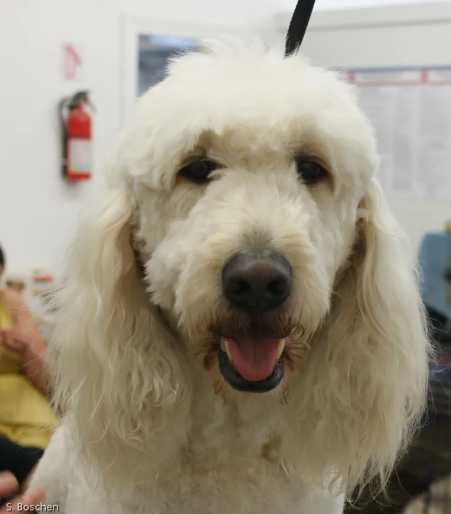
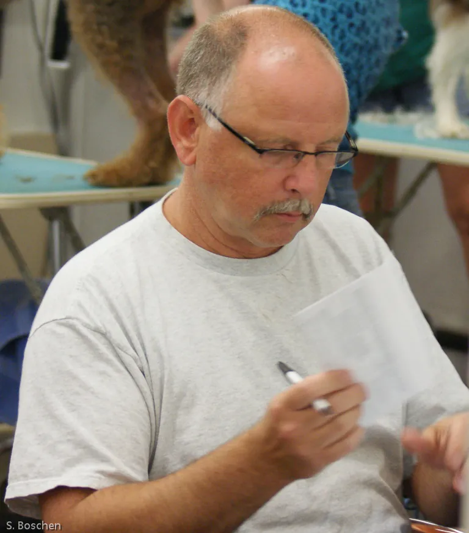

Tue to Fri 7:30 AM – 5:30 PM, Sat 8:00 AM – 5:00 PM
Professional pet grooming, Richmond VA
Where a dirty dog is a temporary thing.
Big or small, we groom them all, cats too. Steve Boschen has been grooming Richmond's pets since 1972, and The Barking Lot has been open since 1990, on North Belmont Avenue in the Museum District.

- 1972Grooming pets in Richmond since
- 1990The Barking Lot, serving Richmond since
- 4.5 out of 5stars from 141 Google reviews
- 2022Best of Virginia, 1st place Dog Groomer (Virginia Living)
- Dogs + catsAll breeds. Big or small.
The services
Pick a stall
Professional Pet Grooming, all breeds, dogs and cats. Everything from a quick nail trim to a full hand-scissored groom, done by experienced hands. Every job is quoted on the phone.
Bath & brush
Bathing, brushing, blow drying and a finishing spritz of cologne.
Cuts & styling
Clipper cuts, hand scissoring and breed-appropriate styling.
Nails
Trimming, filing and grinding. Walk-in nail trims until 2 PM.
Ears & teeth
Ear cleaning, ear hair trimmed or plucked, and teeth brushing.
Skin & coat care
Dematting, flea dips, medicated baths and specialty shampoos.
Cats, too
Professional grooming for cats, from people who are gentle with them.
The Regulars
Portraits of the regulars
Taken by Steve. For years, Steve has photographed the dogs and cats who come through the door, fresh off the table. Each one gets a numbered stall.

Steve's story
Grooming Richmond since 1972
Steve Boschen has been grooming Richmond's pets since 1972. The Barking Lot has served the city since 1990, and today it sits on North Belmont Avenue in the Museum District.
Customers talk about the same things again and again: experienced staff, reasonable prices, a shop that listens to what you ask for, and cats that come home calm. One reviewer summed it up as "old school integrity."
Professional, Loving Care.
More about Steve and the shopRecognition
Permits on the dashboard
Richmond has noticed. A few of the honors The Barking Lot and Steve have earned along the way.
- Virginia Living2022
Best of Virginia, 1st place, Dog Groomer
"Don't be fooled by the name — the Barking Lot offers cat grooming services too."
Virginia Living, Best of Virginia 2022 - Richmond Magazine2010
Editor's Pick
Named the best grooming establishment in Richmond Magazine's Editor's Picks.
- County Advisory BoardTop Gun
Business professional recognition
Steve Boschen was recognized as a "TOP GUN" business professional by the County Advisory Board.
Open today?
Check the sign
The sign updates live with Richmond time. Pull up on North Belmont Avenue; there is street parking on Belmont.
Current open or closed status and weekly hours
Tuesday to Friday 7:30 AM to 5:30 PM, Saturday 8:00 AM to 5:00 PM
| Tuesday | 7:30 AM – 5:30 PM |
|---|---|
| Wednesday | 7:30 AM – 5:30 PM |
| Thursday | 7:30 AM – 5:30 PM |
| Friday | 7:30 AM – 5:30 PM |
| Saturday | 8:00 AM – 5:00 PM |
| Sunday | Closed |
| Monday | Closed |
Get directions to 606 N Belmont Ave (opens Google Maps in a new tab)
Quick facts
The Barking Lot at a glance
- Business
- The Barking Lot, professional dog and cat grooming. All breeds.
- Address
- 606 N Belmont Ave, Richmond, VA 23221 (Museum District)
- Phone
- (804) 358-4038
- Hours
- Tue to Fri 7:30 AM – 5:30 PM; Sat 8:00 AM – 5:00 PM; closed Sun and Mon
- Services
- Bath and brush, clipper cuts, hand scissoring, breed-appropriate styling, nails, ears, teeth, dematting, flea dip, medicated and specialty baths, cat grooming
- Price guide
- Call for a quote. Prices depend on your pet and the services you choose.
- Walk-ins
- Walk-in nail trims until 2 PM (call ahead to confirm)
- Parking
- Street parking on Belmont Avenue
- Payment
- Cash, Visa, MasterCard, debit cards, checks
- How to book
- Call (804) 358-4038 or send a request; we'll call you to confirm a time.
FAQ
Questions people ask
Straight answers about booking, prices, parking and more. Still wondering? Call (804) 358-4038.
Do you groom cats?
Yes. Big or small, we groom them all, cats too. Virginia Living put it this way: "Don't be fooled by the name — the Barking Lot offers cat grooming services too."
How much does grooming cost?
Prices are not listed online because every pet is different. Call (804) 358-4038 for a quote for your dog or cat.
Do you take walk-ins?
Walk-in nail trims are available until 2 PM (call ahead to confirm). Full grooms are by appointment, so call to book.
Where do I park?
Street parking on Belmont Avenue, right outside the shop at 606 N Belmont Ave.
What are your hours?
Tuesday to Friday 7:30 AM to 5:30 PM, and Saturday 8:00 AM to 5:00 PM. Closed Sunday and Monday.
What forms of payment do you accept?
Cash, Visa, MasterCard, debit cards and checks.
Do you need my pet's vaccination records?
Ask us about vaccination requirements when you call to book at (804) 358-4038.
How do I book an appointment?
Call the shop, or send an appointment request online. A request is not a confirmed booking; we'll call you to confirm a time.
Pull in
Your spot at the lot is waiting
"Professional, Loving Care" for dogs and cats of every size. Call to book, or send a request and we'll call you back to set a time.